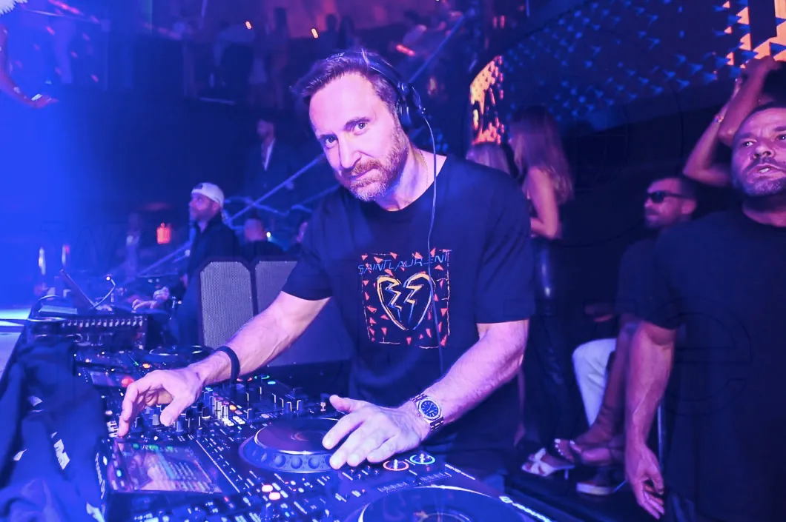
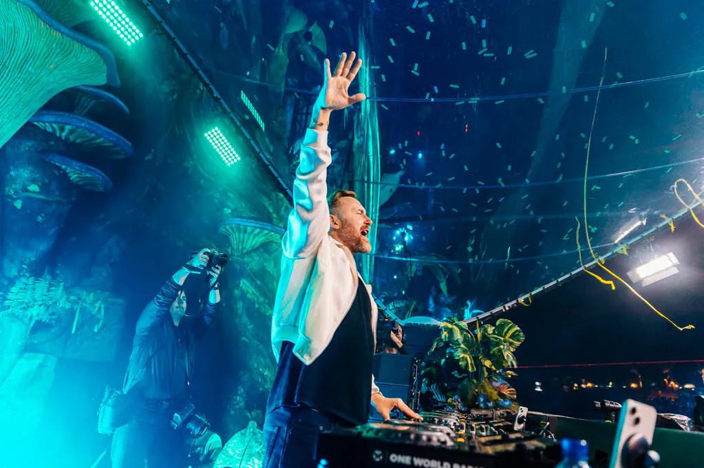

El debut con el que presentó su propuesta de música house y electrónica.

El sonido que conecta al mundo.
DJ, productor y compositor francés que llevó la música electrónica a escenarios globales. Su estilo combina house, EDM y pop, y sus colaboraciones con artistas internacionales han dado algunas de las canciones más conocidas de la música dance.
Ver su set en Tomorrowland 2019
Pierre David Guetta nació el 7 de noviembre de 1967 en París. Empezó como DJ en los clubes de la ciudad durante la década de 1980, donde se enamoró de la música electrónica y la cultura de club.
En 2002 publicó su álbum debut, Just a Little More Love. Con los años consolidó su carrera internacional gracias a producciones que mezclan la electrónica con voces y estilos del pop. Álbumes como One Love y Nothing but the Beat ampliaron su presencia en las listas y en los festivales de todo el mundo.
Ha trabajado con artistas como Sia, Kelly Rowland, Akon, Usher, Rihanna, Nicki Minaj, Bebe Rexha y Anne-Marie. También ha explorado otros sonidos con proyectos como Jack Back y el Future Rave, el estilo que desarrolló junto al DJ y productor MORTEN.
Sus siete álbumes de estudio, del house de club de 2002 al dance-pop de estadio.
El debut con el que presentó su propuesta de música house y electrónica.

Continúa la exploración de sonidos house y dance.

Desarrolla su estilo electrónico y amplía sus colaboraciones.

Combina la electrónica con voces y sonidos del pop internacional.

Uno de sus álbumes más reconocidos, pensado para la pista de baile.

Una propuesta más amplia de producción y colaboraciones.

Reúne distintos estilos y facetas de su carrera.
Las colaboraciones son el centro de su identidad artística. Ha trabajado con artistas del pop, el hip-hop, el dance y la electrónica:
Desliza o usa las flechas para recorrer sus shows en vivo.




Sets completos y aftermovies del canal oficial. Elige uno y se reproduce aquí mismo.
Set completo en el festival de Boom, Bélgica.